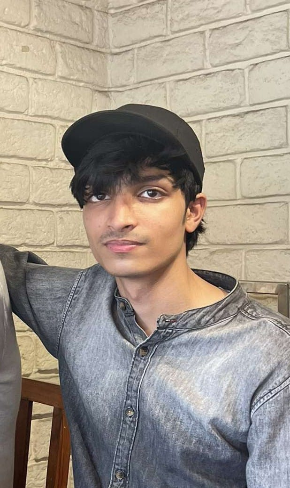

About Me
Hi, my name is Mohammed Ali Khan. I am a final-year undergraduate in Information Technology with a strong focus on Deep Learning, particularly in CNNs, sequence models, and optimization techniques.
I emphasize building a deep understanding by implementing neural architectures from first principles rather than relying solely on high-level libraries. I am currently seeking internship or entry-level opportunities in AI/Deep Learning, where I can contribute to real-world problems while continuing to grow as a machine learning engineer.
🔹 55+ LeetCode problems · TCS NQT certified (80.31%) · DeepLearning.AI specialization
Learn More
My Learning
I am a final-year IT undergraduate at Muffakham Jah College of Engineering & Technology (CGPA: 8.24/10), with a focused interest in Deep Learning and AI systems.
My learning approach is grounded in first principles — I build and experiment with neural networks from scratch to develop a strong understanding of how models behave internally. I have worked on convolutional neural networks, LSTMs, and optimization techniques, along with implementing a binary classifier.
Alongside this, I completed the Deep Learning Specialization (DeepLearning.AI), covering neural networks, CNNs, and sequence models (LSTM/GRU), and have explored applications ranging from deep learning systems to blockchain-based simulations.
I am expected to graduate with a B.E. in Information Technology in 2026. I have also earned the TCS iON NQT certification (Foundation: 80.31%, Psychometric: 90%) and actively engage in technical writing — including "Why LSTM Works Better Than Vanilla RNN".
My Progress
🎓 Education
CGPA: 8.24/10 (after 7 semesters) · Graduation: 2026
Relevant coursework: Python, Data Structures, Algorithms, Machine Learning, DBMS
⚙️ Technical Skills
📜 Certifications
- ✅ TCS ION NQT (IT) — foundation 80.31% | psychometric 90%
verify certificate · verify report (valid till 2027) - ✅ Deep Learning Specialization – DeepLearning.AI (Coursera)
[Verify Certificate]
neural networks, CNNs, sequence models (LSTM/GRU), optimizations
💼 Internship
Moral Merry School · Web Developer Intern
🔗 moralmerry.in (live) · view certificate
🔬 Featured Projects
Media Bias Dataset Builder
Developed a dataset pipeline to collect and label media bias from Indian news sources using AI-assisted analysis and human validation.
Cat vs Non-Cat Classifier
Binary image classifier using multi-layer neural network built entirely with NumPy. Trained with gradient descent, sigmoid activations, manual forward/backward propagation.
StableX – Crypto Stabilizer
Decentralized ERC-20 token simulation with a Python-based stabilization bot designed to analyze and regulate market volatility.
DSA Problems Repository
Solving the Top 150 interview coding problems (under process) to master core algorithms and data structures with optimized solutions.
DAA Practice Repository
Implementation of classical algorithms including sorting, searching, backtracking, and dynamic programming with detailed complexity analysis.
Linear Regression from Scratch
Implemented linear regression from first principles using gradient descent, including cost function derivation and parameter optimization without ML libraries.
Heart Disease Prediction
Built a predictive model using linear regression on the UCI Heart Disease dataset, focusing on feature relationships and model interpretability.
✍️ Technical Writing
Why LSTM Works Better Than Vanilla RNN (Medium)
Deep-dive on vanishing gradient & LSTM gates (forget/input/output). Read article
🧩 Problem Solving
LeetCode: 55+ problems solved · sharpening DSA · profile link
Languages: Python, C++, SQL
Publications & Writing
Detailed internal architecture: forget, input, output gates; how they solve vanishing gradient and learn long-term dependencies.
Also check my GitHub for more reproducible work.